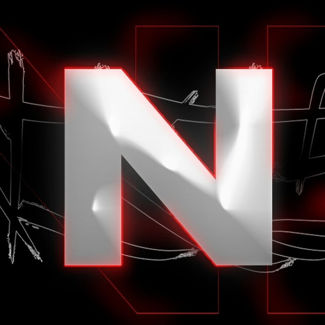

NIKISMAN.FUN
Скоро тут будет Фан-Вики по ютуберу "Nikis Man"!
Мы работаем над созданием самого полного источника информации о ваших любимых моментах, нарезках и шутках Никис Мана.
Будьте готовы к запуску!
В разработке